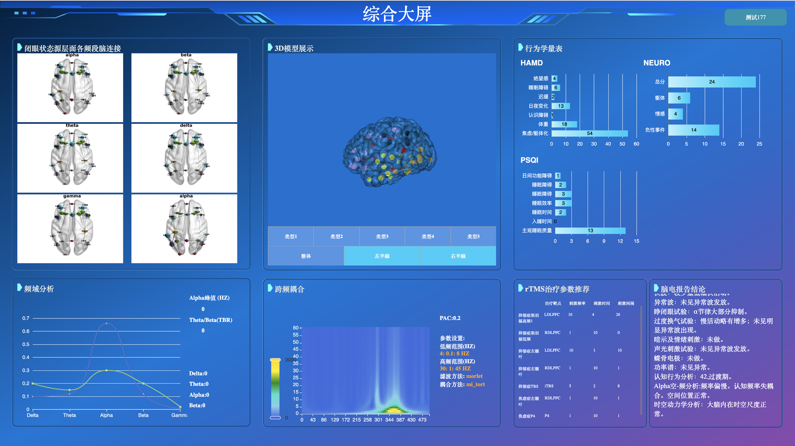

I redesigned a TMS (Transcranial Magnetic Stimulation) dashboard that had been rejected three times due to a lack of visual credibility. When stakeholders asked for “sci-fi vibes,” I reframed it into a clinical authority system focused on precision, safety cues, and cognitive clarity. The redesign helped the project pass a national clinician vote and secure Phase 2 live-data integration approval.

The original interface was functional but visually noisy—dense panels, unclear hierarchy, and a generic UI feel. The redesign reframed the product into a disciplined Dark Cockpit system where contrast, spacing, and active-state logic communicate control and readiness.
Clinical dashboards aren’t just “screens”—they represent credibility.
Shenzhen People’s Hospital, in collaboration with Stanford mentors, runs national TMS (Transcranial Magnetic Stimulation) training programs. In these workshops, clinicians rely on a dashboard to verify stimulation targets and interpret brain responses—often in real time. This means the interface is part of the clinical decision workflow where clarity and credibility directly affect adoption.
• Reframed trust problem
• Built visual system + IA
• Prototyped interaction logic
• Partnered with PM/Eng/Clinical leads
• Weekly stakeholder reviews
• Fast iteration cycles
• Goal: unblock Phase 2 funding

The demo worked—but it didn’t feel safe.
Despite functional backend logic, the project was stalled. Over two months, the demo had been rejected three times. Stakeholders hesitated to approve it for live patient data because the interface felt “cluttered” and “unprofessional.”
Decoding “Sci-Fi”
In weekly reviews, I moved beyond surface feedback and conducted deeper interviews to understand the root of their hesitation.
"The interface looks like systems we used 10 years ago. Presenting this to young doctors makes our entire team look unprofessional."
"We just threw elements on the screen as long as the functionality worked. There was no system to how things were placed."
The distrust wasn't about missing features. It was about visual outdatedness signaling lack of team competence. When stakeholders asked for "sci-fi," they were really asking for an interface that matched their vision of "modern medical technology."
So what does “trust” look like?
I analyzed 5 high-precision interfaces to understand what visual language communicates authority:
| Product Category | Key Trust Signals |
|---|---|
| Medical imaging software (GE, Siemens PACS) | Dark backgrounds reduce glare, highlight critical data, signal "professional grade" |
| Tesla driving visualization | High-contrast active states, precise animations convey control and safety |
| Aircraft cockpit displays | Information-dense but hierarchically structured—supports rapid scanning |
| Surgical robot interfaces | Restrained color palette, generous spacing around critical controls |
| Lab equipment dashboards | Clear status indicators, explicit confirmation states |
Key Findings
- Dark UI is the norm in professional medical contexts—it reduces eye strain during long sessions and makes critical data pop
- Information density isn't the enemy—poor hierarchy is. Experts prefer seeing more data at once, as long as it's structured
- Active states matter—precise highlighting of what's currently happening builds confidence that the system is responding predictably
I defined three core principles:
-
01
Translate “Sci-Fi” into Clinical Precision
Use contrast, restrained color, and precise data emphasis to signal readiness and professionalism. -
02
Design for Cognitive Scanning
Clinicians operate under time pressure. The layout must support rapid scanning. -
03
Stakeholder Alignment
Turn subjective aesthetic debates into structured visual explorations.
The “Dark Cockpit” Authority System
Color System: Deep Navy & Electric Blue
I shifted from a generic light theme to a dark, controlled palette—directly inspired by medical imaging software and cockpit interfaces.
- Deep Navy (#0A1A2F): The foundation. Creates focus, reduces glare, and signals "advanced technology." In professional medical contexts, dark = serious, precise, trustworthy.
- Electric Blue (#2A8CFF): Reserved for active states, interactive elements, and critical data. High contrast ensures key information is instantly scannable.
- Neutral Grays: For secondary information and structural elements—present but never competing with active data.
Workflow-Driven Layout
Instead of a generic information layout, I restructured the dashboard to mirror the clinical decision flow:
Visual Hierarchy for Rapid Scanning
- Data density increased, but cognitive load decreased — By grouping related information and using consistent spacing, clinicians can now parse the screen in seconds
- Active states are unmistakable — When a parameter is selected or stimulation is running, the Electric Blue highlight leaves no ambiguity
- Progressive disclosure — Advanced settings are available but tucked away, reducing noise for the primary workflow
The redesign unblocked the future.
The redesign did what code alone couldn’t: it shifted stakeholder perception from skepticism to confidence—and cleared the path for real-world adoption.
“Sci-Fi” is often a proxy for “competence.”
Stakeholders often lack vocabulary to describe UI trust issues. When they ask for a style (“sci-fi”), they’re frequently expressing an emotional requirement. My job as a designer was to translate that into a scalable visual system and a workflow-driven layout.